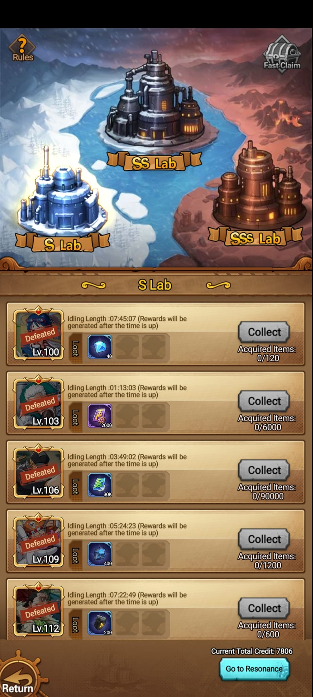
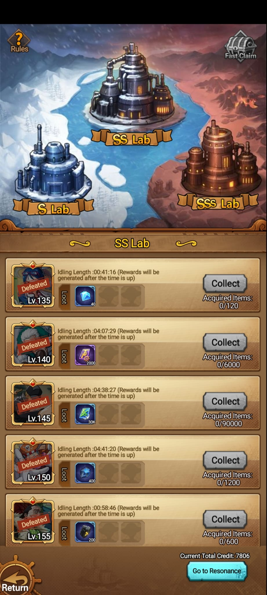
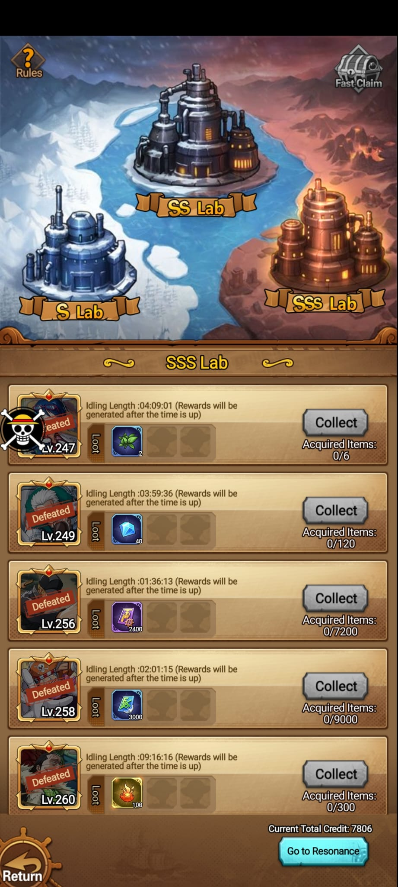
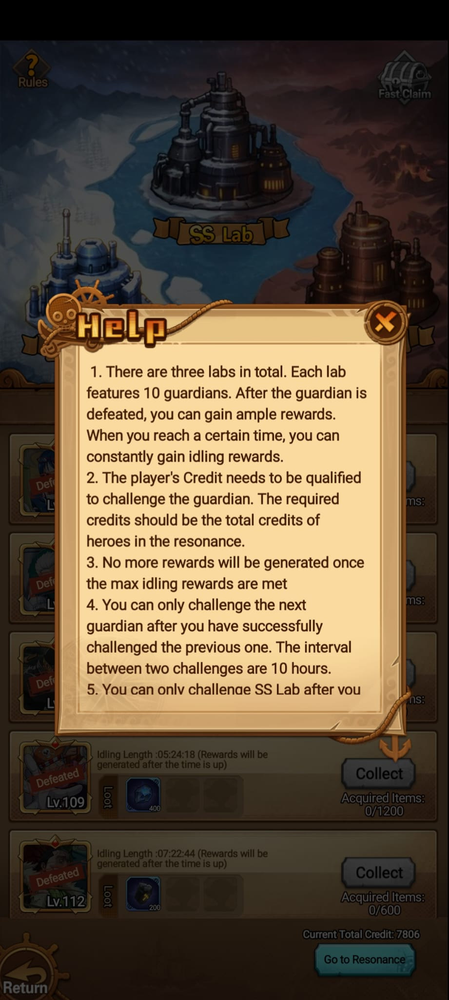
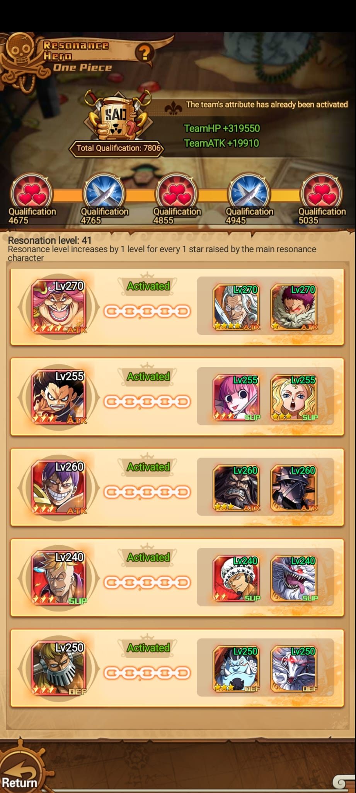
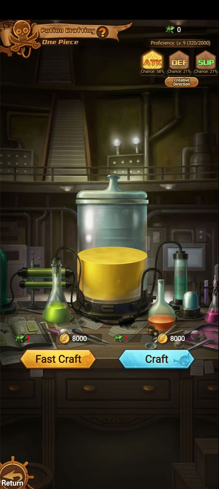

Acceso
Se entra desde el botón Vegapunk's en la ciudad principal.
 Idle Pirate Wiki
Idle Pirate Wiki
Sistema avanzado
El botón Vegapunk's abre los laboratorios S, SS y SSS. Es un sistema de guardians con recompensas idle, relación directa con Resonance y crafteo de pociones mediante Medicine Herb.
Resumen
Se entra desde el botón Vegapunk's en la ciudad principal.
Hay 3 labs: S Lab, SS Lab y SSS Lab. Cada uno tiene 10 guardians.
Al derrotar guardians se desbloquean recompensas idle hasta un máximo acumulado.
Después de vencer un guardian, el siguiente desafío queda limitado por 10 horas.
Capturas






Rewards
| Lab | Nivel enemigo | Idle length visible | Reward visible | Acquired Items |
|---|---|---|---|---|
| S Lab | Lv.100 | 07:45:07 | Diamante x40 | 0/120 |
| S Lab | Lv.103 | 01:13:03 | Ticket morado x2000 | 0/6000 |
| S Lab | Lv.106 | 03:49:02 | Recurso verde x30K | 0/90000 |
| S Lab | Lv.109 | 05:24:23 | Recurso azul x400 | 0/1200 |
| S Lab | Lv.112 | 07:22:49 | Material oscuro x200 | 0/600 |
| SS Lab | Lv.135 | 00:41:16 | Diamante x40 | 0/120 |
| SS Lab | Lv.140 | 04:07:29 | Ticket morado x2000 | 0/6000 |
| SS Lab | Lv.145 | 04:38:27 | Recurso verde x30K | 0/90000 |
| SS Lab | Lv.150 | 04:41:20 | Recurso azul x400 | 0/1200 |
| SS Lab | Lv.155 | 00:58:46 | Material oscuro x200 | 0/600 |
| SSS Lab | Lv.247 | 04:09:01 | Hoja verde x2 | 0/6 |
| SSS Lab | Lv.249 | 03:59:36 | Diamante x40 | 0/120 |
| SSS Lab | Lv.256 | 01:36:13 | Ticket morado x2400 | 0/7200 |
| SSS Lab | Lv.258 | 02:01:15 | Recurso verde x3000 | 0/9000 |
| SSS Lab | Lv.260 | 09:16:16 | Recurso dorado x100 | 0/300 |
Resonance y crafting
Captura observada: Total Qualification 7806, Resonance level 41, TeamHP +319550 y TeamATK +19910.
La pantalla muestra héroes disponibles, héroes ya usados y poder total del equipo para desafiar guardians.
Cada craft observado consume 1 Medicine Herb y 8000 de oro. En Proficiency Lv.9 (320/2000) las chances visibles son ATK 58%, DEF 21% y SUP 21%. La captura muestra 0 Medicine Herb disponible, botones Craft / Fast Craft y acceso a Creative Direction.
Es una planta que se obtiene en Endless Prison y Vegapunk's Lab. No se puede vender y se usa para crear pociones.
Faltantes
Falta confirmar si cada guardian cambia la velocidad de generación o solo el máximo acumulable.
Faltan los 10 guardians completos del SSS Lab y sus niveles exactos.
Falta documentar cómo sube Proficiency y si cambian los porcentajes ATK/DEF/SUP.